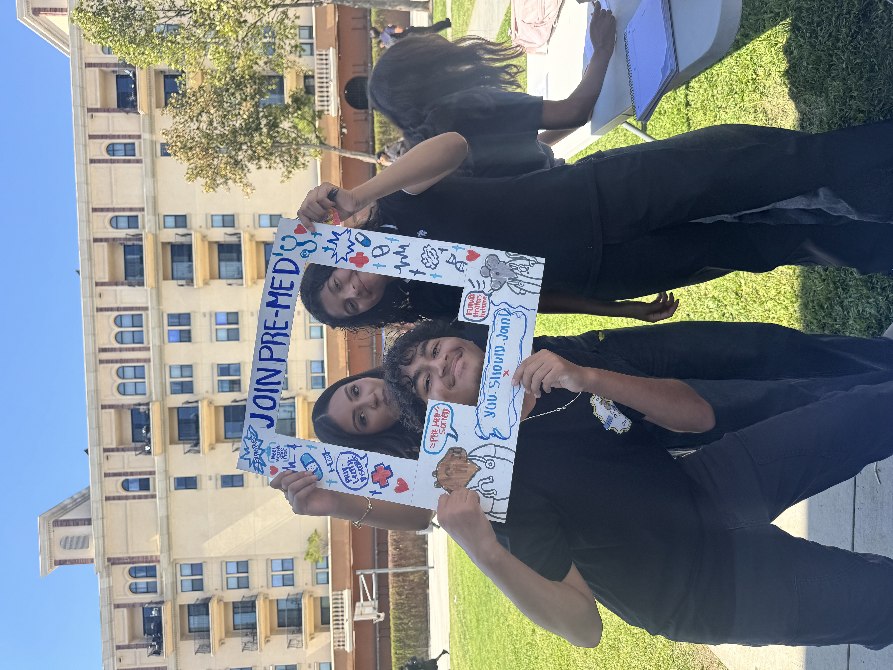
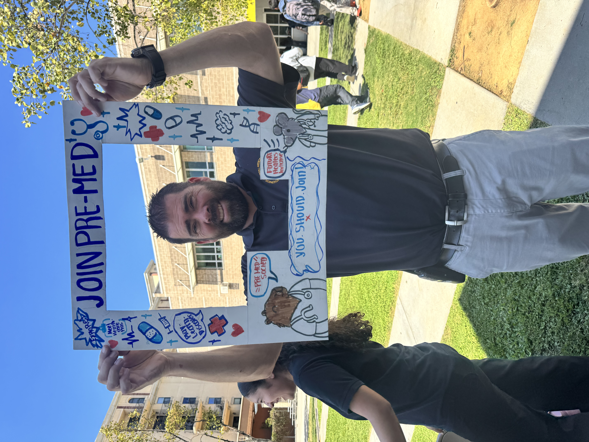
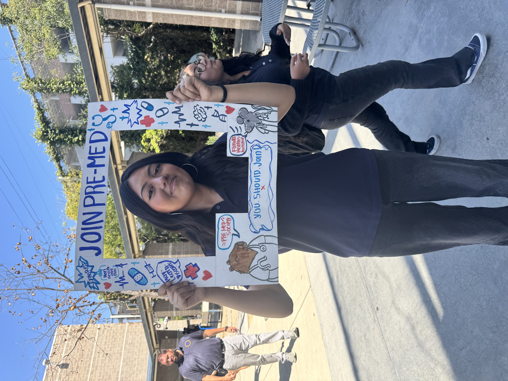
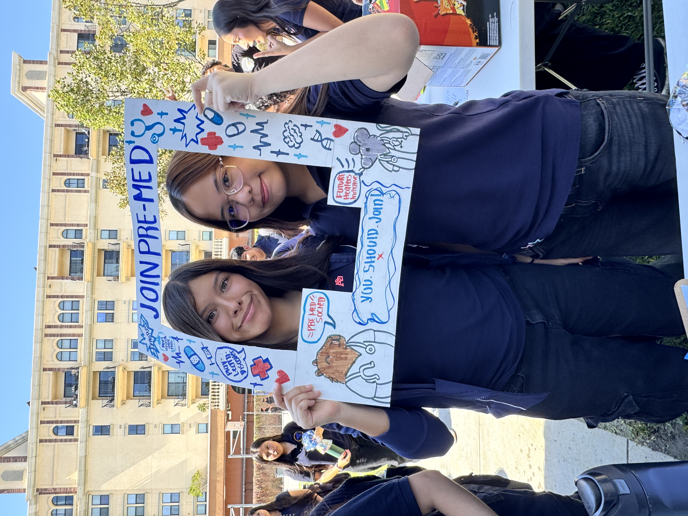
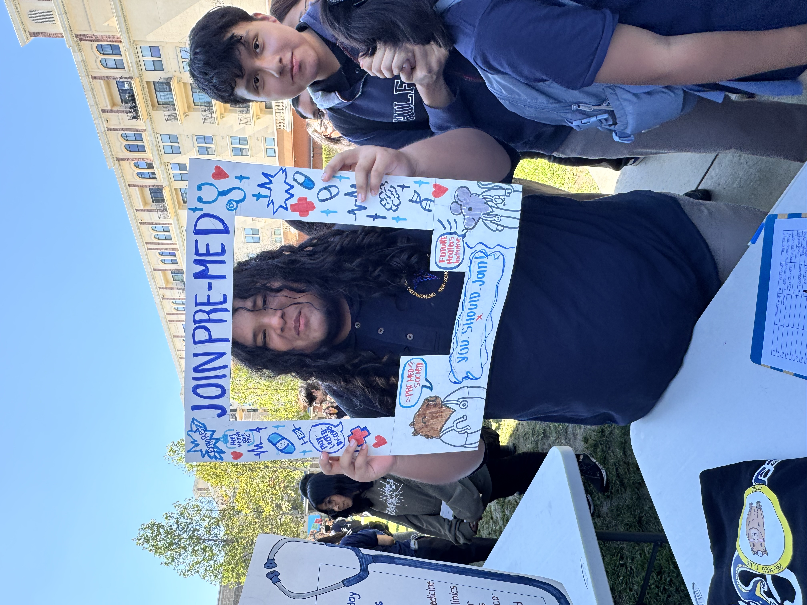
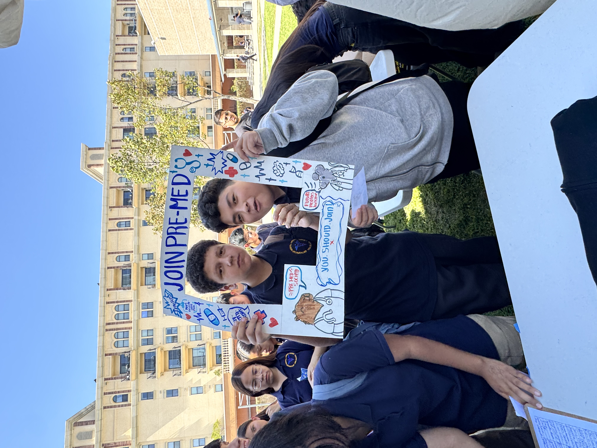
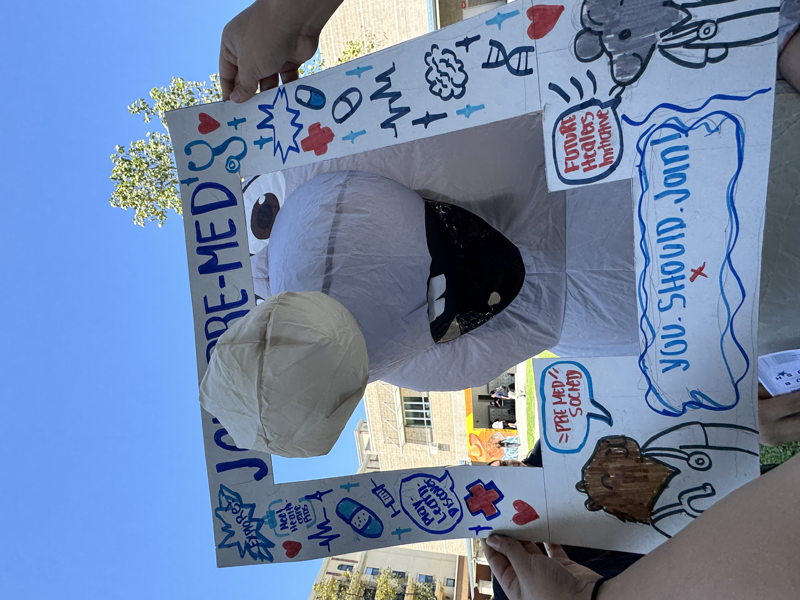
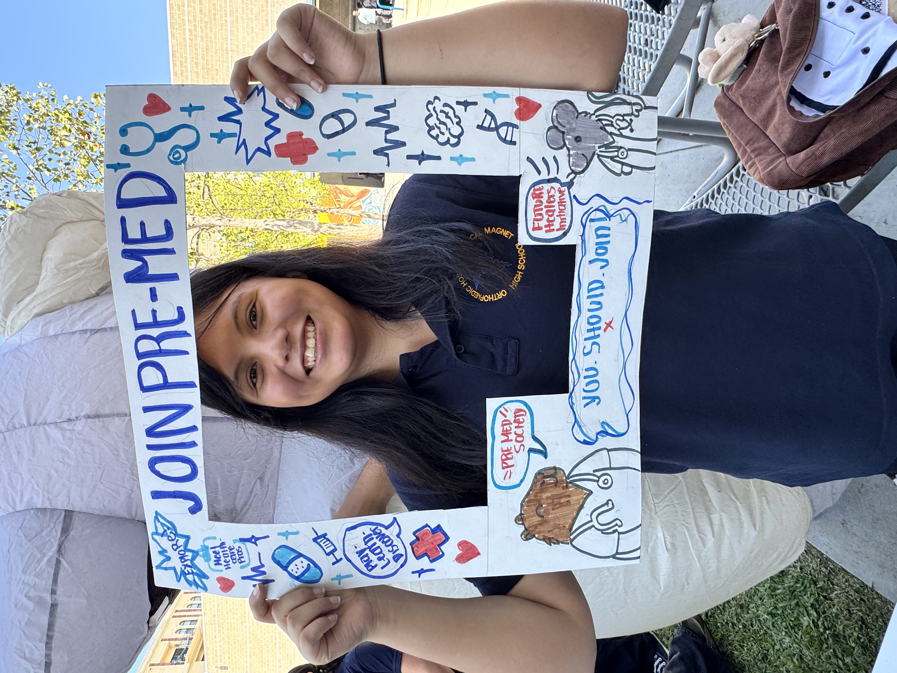

Healthcare exploration should be more than sitting in a room and listening to someone talk. FHI gives students ways to explore, participate, serve, and lead.
Start Exploring →Basically, it's our way of making Pre-Med more interactive.
The Future Healers Initiative is a student-led part of the Pre-Med Society focused on making healthcare exploration more hands-on, interactive, and actually fun.
Instead of only talking about healthcare careers, we want students to get opportunities to try things, ask questions, meet people in healthcare, serve their community, and figure out what they actually enjoy.
Pre-Med is the school club. It's the community where students interested in healthcare can meet, participate, lead, and explore different parts of medicine.
StudentsBuild supports project-based student work at Ortho. Instead of creating a completely separate StudentsBuild club, Pre-Med became the home for this project.
FHI is the interactive healthcare project within Pre-Med. It's where we turn ideas into activities, service, mentorship, leadership, and real experiences.
The Pre-Med Society's longtime mascot. Calm, curious, and somehow always involved. The capybara represents the community side of FHI.
The FHI mascot. Curious, experimental, and always looking for the next thing to explore. Basically the Future Healer who wants to know, "Wait... what happens if we try this?"
Transform the Pre-Med Society into a more interactive healthcare exploration community.
Create a school environment where students explore healthcare careers through hands-on experiences, leadership, service, and mentorship.
Some moments from Club Rush and the people who make Pre-Med what it is.








Club Rush • 2026 🩺
Start exploring. You don't have to know exactly what you want to do yet.
Explore Healthcare →